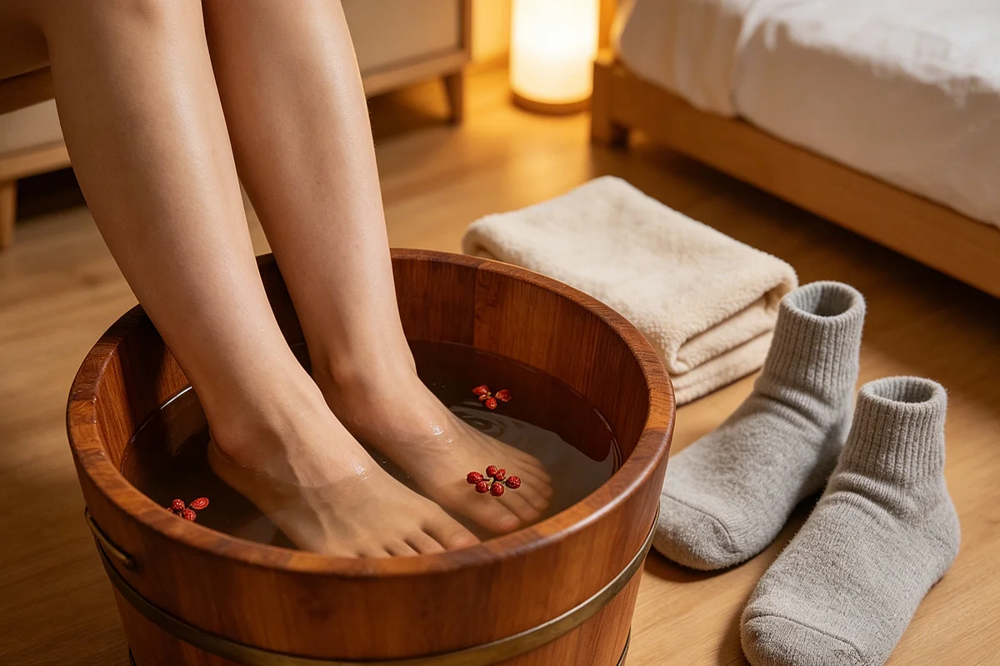

Sichuan Peppercorn Foot Soak: A Warm Basin for Bone-Deep Cold
In the mountain regions of southwestern China, where winter dampness creeps through stone floors and into the soles of your feet, some households add an unusual ingredient to their foot soak water: a generous handful of Sichuan peppercorns. The practice belongs entirely to folk memory — no written manual, no prescribed temperature, no fixed schedule. Just a basin, hot water, peppercorns, and the felt experience of warmth that reaches deeper than plain water ever does.
Sichuan peppercorn — hua jiao (花椒, literally "flower pepper") — is better known internationally as the spice behind the numbing, tingling sensation in Sichuan cuisine. That unique feeling, called ma (麻) in Chinese, is not the same as spiciness from chili. It's a vibration on the tongue, a citrusy fizz that has no equivalent in Western cooking. The same compound in the peppercorns that creates that sensation — an alkaloid called hydroxy-alpha-sanshool — is also what folk tradition values for a different purpose: a feeling of spreading warmth when the peppercorns are steeped in hot water and applied to the feet.

I learned about this practice from a colleague's grandmother in Chengdu, a woman in her late eighties who still walked to the market every morning. She told me that her mother used to say: "if the cold has reached your bones, plain hot water won't reach it back." For her, the peppercorn soak wasn't a daily habit — it was a winter-only practice, reserved for evenings when the damp chill had settled into her knees and the tips of her toes felt numb despite thick socks.
Where the practice comes from
The use of Sichuan peppercorn in foot soaks follows the same cultural logic as many other folk warmth practices across China: if an ingredient creates a strong sensation when eaten — numbing, warming, tingling — it might also create a noticeable sensation when applied externally. This is not clinical reasoning. It's kitchen-table logic, the same kind that puts a warm salt pack on a stiff shoulder or adds ginger to a pot of congee. People noticed that peppercorns made their mouth feel strange and alive. They tried them in hot water for tired feet. The sensation translated. The practice stuck.
Historical references to Sichuan peppercorn appear in classical Chinese texts dating back over two thousand years, where it is listed among common household spices used in cooking and occasionally in aromatic baths. The peppercorn has also been used in traditional regional practices involving heated bags and compresses, though the foot soak is by far the most widespread surviving form.
If you've already read about mugwort foot soaks, the peppercorn version follows the same basic structure but with a markedly different sensory experience — the mugwort version is earthy and herbal, while the peppercorn version carries a citrusy, tingling quality that some people find deeply comforting and others find too intense.
How it actually looks at home
The practice is strikingly simple: a handful of Sichuan peppercorns goes into a pot of water, brought to a boil, then removed from heat and left to steep for ten to fifteen minutes until the water turns a pale brown and carries a sharp, citrusy aroma. The steeped water is poured into a basin, topped with cool water until it reaches a comfortable temperature, and used as a foot soak lasting ten to twenty minutes.
Unlike the mugwort soak, which some families do year-round, the peppercorn soak is almost always seasonal — appearing in late autumn, persisting through winter, and disappearing by early spring. The reason is simple: in warm weather, the intense tingling sensation feels overwhelming rather than pleasant. The practice only makes sense when the air is cold enough that any kind of warmth — including the peculiar warmth of peppercorn-steeped water — is welcome.
The sensory experience
People who try this for the first time often describe it as disorienting at first. The water doesn't just feel warm — it feels active. A mild tingling spreads across the skin of the feet, not unlike the sensation of carbonated water but deeper, more diffuse. For some people this is immediately relaxing. For others it takes a few sessions to get used to. Both responses are normal. The habit was never meant to be universal — it's a regional folk practice that traveled through families, not through marketing.
Materials
- Sichuan peppercorns (花椒) — about two tablespoons per soak. Available at Asian grocery stores or online.
- A pot large enough to hold two to three liters of water
- A basin wide enough to submerge both feet up to the ankles
- A towel and socks for drying and warming afterward
Steps
- Add two tablespoons of Sichuan peppercorns to a pot with about two liters of water.
- Bring to a boil, then immediately remove from heat.
- Cover the pot and let the peppercorns steep for 10 to 15 minutes. The water will turn a pale amber and develop a strong citrus-like aroma.
- Strain the water into a basin to remove the peppercorns. Let it cool until it feels comfortably warm on the inside of your wrist — not hot, not challenging, just warm.
- Lower both feet into the basin slowly. Keep your toes able to move freely.
- Soak for 10 to 20 minutes. Top up with warm water if the basin cools too quickly.
- Dry your feet thoroughly, especially between the toes, and put on warm socks.
- Discard the used soak water. The steeped peppercorns can be composted.
Safety — read this before you try
Water temperature is the only real risk with this practice. The strong aroma and tingling sensation can mask how hot the water actually is. Always test the temperature on your wrist before submerging your feet, and err on the side of cooler rather than warmer. If your skin turns red, if the tingling becomes painful, or if the sensation feels wrong in any way, stop immediately and rinse your feet with cool water.
Additional cautions:
- Never use the soak on broken skin, open wounds, or areas with a rash.
- The peppercorn compounds can cause mild skin irritation in sensitive individuals. Test a small area first if you have sensitive skin.
- Don't use water that is still boiling or near-boiling. Always let it cool to a wrist-safe temperature.
- Stop immediately if you experience any stinging, burning, or redness beyond what you'd expect from normal warm water.
Who should check with a professional first
Extra caution is warranted during pregnancy — particularly because the sensation can be intense and because there is limited information about how the compounds in Sichuan peppercorn interact with the body through skin absorption over a 20-minute soak. The same caution applies to anyone with chronic skin conditions (eczema, psoriasis, dermatitis) in the foot area, and anyone with neuropathy or reduced skin sensation who might not be able to judge water temperature accurately.
If you already follow guidance from a healthcare professional about foot care due to diabetes, circulatory conditions, or skin sensitivity, check with them before trying any new foot soak practice — peppercorn or otherwise.
After the soak
After trying the Sichuan peppercorn foot soak, if you need more focused warmth on a particular spot — achy knees, stiff shoulders, cold lower back — a DIY salt heat pack makes a practical follow-up. The foot soak provides whole-body warmth from the ground up, while the salt pack targets specific areas that need extra attention.
Some families use the peppercorn soak as a preparation for the mugwort soak, or alternate between the two depending on the weather and how their body feels. The mugwort version (described in our dried mugwort foot soak article) offers a more subdued, herbal experience that some people prefer for nightly use, while the peppercorn version is more of a seasonal deep-warmth practice for the coldest months of the year.
The Huangdi Neijing observes that cold enters through the feet and that keeping the lower body warm supports comfortable daily rhythms. A peppercorn foot soak on a winter evening is as direct an application of that ancient observation as you're likely to find. I quote it as cultural context, not as medical recommendation.
Referenced from Huangdi Neijing - Suwen (Yellow Emperor's Inner Classic)If you live outside China
Sichuan peppercorns are widely available in Asian grocery stores, specialty spice shops, and online. Look for the reddish-brown husks — avoid pre-ground peppercorn powder, which works poorly for steeping and leaves a muddy residue in the water. Whole dried Sichuan peppercorns are what you need, and a single bag will last you through an entire winter of occasional soak use.
As with all folk practices on this site, keep expectations modest. A peppercorn foot soak is a sensory experience — a tingling, citrus-warm quarter-hour at the end of a cold day. It's not a treatment for any condition. It's just something people in certain parts of China have done for generations, and that alone felt like a good enough reason to write it down.